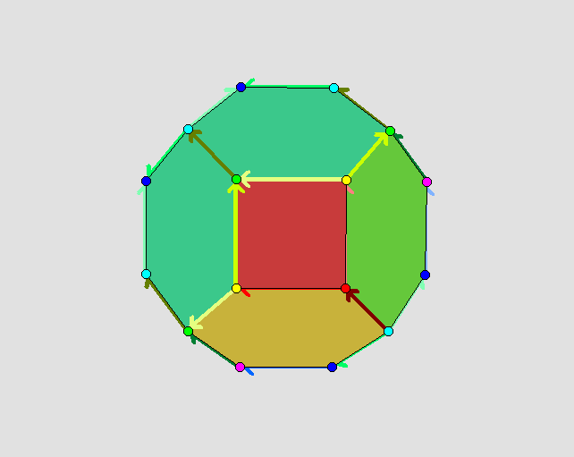

|
|||
|---|---|---|---|
| A
euclidean crystallographic group
G is, by definition, a group of affine transformations of n-dimensional
euclidean space whose subgroup of translations is free abelian of rank
n. One says that G is Bieberbach
if each non-trivial transformation has no fixed point. If G is
Bieberbach then the quotient M=Rn/G is a flat manifold. Tha GAP package Cryst contains the list of 219 three-dimensional space groups. The following commands from the ACLIB package show that 10 of these are Bieberbach. |
|||
| gap>
3dBieberbach:=[]; gap> for n in [1..219] do gap> if IsAlmostBieberbachGroup(Range(IsomorphismPcpGroup( SpaceGroup(3,n) ))) then gap> Add(3dBieberbach,n); gap> od; gap> 3dBieberbach; [ 1, 4, 7, 9, 19, 33, 34, 76, 142, 165 ] |
|||
| A
convex polytopal fundamental domain for the action of a Bieberbach
group can be computed using the HAPcryst package (written by Marc
Röder)
and Polymake software. For the 3-dimensional case these fundamental
domains can be visualized using Javaview. The corresponding flat
manifold is obtained by appropriately identifying facets of the
fundamental domain: identified faces are given identical colours. For example, the Bieberbach group G=SpaceGroup(3,9) admits a permutaheral fundamental domain: 
Of course, a given Bieberbach
group can admit several combinatorially different convex fundamental
domains.
|
|||
| Javaview
images (which can be rotated etc.) of fundamental domains and
tesselations for the 10
three-dimensional Bieberbach groups have been produced by Marc
Röder and can be viewed here.
(If you don't have Javaview installed then an html example is
given here.) |
|||
|
{kind=link}